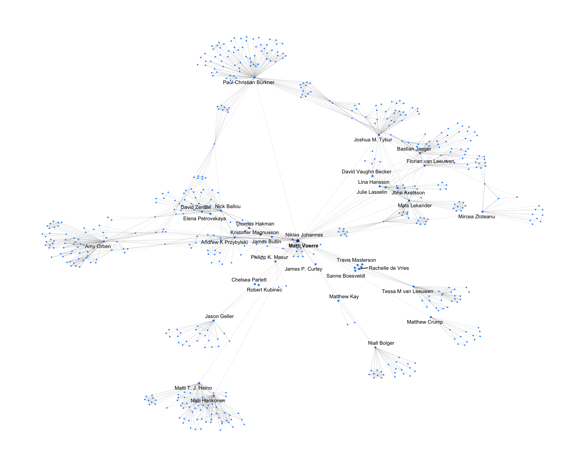

![]()
library(tidyverse)
library(patchwork)
library(jsonlite)
library(psyarxivr)PsyArXiv is the leading free preprint service for the psychological sciences, maintained by The Society for the Improvement of Psychological Science and powered by OSF Preprints. Today, PsyArXiv hosts 45924 preprints from 166674 contributors1. Beyond these basic statistics, the OSF API (link to documentation) makes a wealth of data available, but interacting with the API can be cumbersome and slow.
To make PsyArXiv data more accessible, psyarxivr provides metadata for all PsyArXiv preprints in a single table as an R package. In this post, I show how to use data from psyarxivr to create a single person’s second-degree coauthorship network.
Getting started
I first load the required packages: tidyverse for general purpose wrangling, patchwork for combining plots, jsonlite for processing JSON data, and psyarxivr for the data.
Data wrangling
The psyarxivr package, when loaded as above, provides access to the preprints table. Below, we take our focal variables id (for each preprint) and contributors, which contains the contributor data as JSON strings.
Click to show/hide code
# Parse contributors JSON variable into its own table with preprint ids
contributors <- preprints |>
# Remove preprints with no contributor data and non-latest versions
filter(contributors != "[]", is_latest_version == 1) |>
# Select required variables only
select(id, contributors) |>
# Convert JSON into data frames in a list-column
mutate(
contributors = map(
contributors,
fromJSON
)
)
# Unnest into a table of contributors and clean
contributors <- contributors |>
unnest(contributors) |>
# Only include bibliographic authors
filter(bibliographic) |>
# Remove some other contributor variables and rename
select(id, name = full_name) |>
# Take out unnamed contributors
filter(name != "")
# Calculate total number of contributors
contributors_total <- nrow(contributors)In this post I’m only interested in my own coauthorship network. The contributors table now has rows for each preprint’s contributors. I first filter it to only include preprints on which I was a coauthor (retaining all authors of the preprints):
Code
my_coauthors <- contributors |>
# Retain all preprints where any of the authors was me
filter(any(name == "Matti Vuorre"), .by = id)
my_coauthors
## # A tibble: 90 × 2
## id name
## <chr> <chr>
## 1 qrjza_v1 Niklas Johannes
## 2 qrjza_v1 Matti Vuorre
## 3 qrjza_v1 Andrew K Przybylski
## # ℹ 87 more rowsAbove, id is the preprint’s OSF ID, and each has one or more names of the preprints’ contributors.
If I created a graph from these data, it would only show my immediate collaborators, but I wish to expand it to show their other collaborators as well. To do so, I filter the original contributor data to include only preprints that have one or more authors who appear as contributors on any of my preprints:
Code
my_coauthors_coauthors <- contributors |>
# Retain all preprints where any author was my coauthor
filter(any(name %in% unique(my_coauthors$name)), .by = id)
my_coauthors_coauthors
## # A tibble: 1,195 × 2
## id name
## <chr> <chr>
## 1 zzbka_v1 Andrew K Przybylski
## 2 zzbka_v1 Antonius J. van Rooij
## 3 zzbka_v1 Michelle Colder Carras
## # ℹ 1,192 more rowsThere are 1195 individual contributions to preprints that were either coauthored by me, or any of my coauthors. This is the data I’ll use to construct what I call my second-degree PsyArXiv coauthor network graph.
Creating the graph
Here’s the graph-related packages I’ll use. Most of the actual network analysis functionality comes from the igraph package, but tidygraph wraps those into syntax that I find easier to understand. ggraph allows plotting the data with ggplot2.
Code
library(tidygraph)
library(ggraph)I then need to convert the table of (my 2nd degree) coauthors to a suitable format for creating graphs. To do so I first expand the long-format table to a table of edges:
Code
# Get all pairs of co-authors for each paper and count collaborations
edges <- my_coauthors_coauthors |>
group_by(id) |>
# Create all pairwise combinations within each paper
reframe(expand.grid(
author1 = name,
author2 = name,
stringsAsFactors = FALSE
)) |>
# Remove self-loops and order pairs for undirected edges
filter(author1 < author2) |>
rename(from = author1, to = author2)
edges
## # A tibble: 2,624 × 3
## id from to
## <chr> <chr> <chr>
## 1 2erwy_v1 Harm Veling Niklas Johannes
## 2 2erwy_v1 Jonas Dora Niklas Johannes
## 3 2erwy_v1 Adrian Meier Niklas Johannes
## # ℹ 2,621 more rowsIn this table, all contributors co-occurring in a preprint are represented as from-to pairs. As you can see from the roughness of that code, it took me some hacking around to accomplish this.
Then, I use convenience functions from tidygraph to convert the edges data frame to a graph, and calculate each coauthors’ (“nodes”) distance from me. I took a social network analysis about a decade ago so details & code below are likely to be a bit dodgy: Let me know if you see room for improvement.
Code
# Create graph with key metrics
graph <- edges |>
as_tbl_graph(directed = FALSE) |>
mutate(
distance = factor(node_distance_from(name == "Matti Vuorre"))
)
graph
## # A tbl_graph: 567 nodes and 2624 edges
## #
## # An undirected multigraph with 1 component
## #
## # Node Data: 567 × 2 (active)
## name distance
## <chr> <fct>
## 1 Harm Veling 2
## 2 Jonas Dora 2
## 3 Adrian Meier 2
## 4 Leonard Reinecke 2
## 5 Moniek Buijzen 2
## 6 Donald R. Williams 2
## 7 Andrew K Przybylski 1
## 8 Nick Ballou 1
## 9 Tamás Andrei Földes 2
## 10 Elina Renko 2
## # ℹ 557 more rows
## #
## # Edge Data: 2,624 × 3
## from to id
## <int> <int> <chr>
## 1 1 140 2erwy_v1
## 2 2 140 2erwy_v1
## 3 3 140 2erwy_v1
## # ℹ 2,621 more rowsVisualizing the graph
With the data prepared we can now start constructing the plot. First, I’ll sketch a no-frills version that shows just the data with default settings. Perhaps the most critical option is ggraph(layout = "fr") which determines the layout algorithm. I recall “fr” being okay for these and it seems to work okay, but there are probably other better ones.
Code
set.seed(999)
graph |>
# Create a ggplot with appropriate mappings for graph data
ggraph(layout = "fr") +
# Show edges
geom_edge_link() +
# Show nodes
geom_node_point() +
# A blank theme
theme_graph()This figure would display the data all right, but the plot would be ugly and uninformative. To improve, I’ll specify and map more aesthetics (size et cetera) to variables in the data, highlight myself, add text labels to my coauthors, and adjust the colors and sizes of the elements.
Code
set.seed(999)
graph |>
ggraph(layout = "fr") +
# Make edges less prominent
geom_edge_link(
linewidth = 0.2,
alpha = 0.4,
color = "gray70"
) +
# Nodes further from me are smaller
geom_node_point(
aes(size = distance, color = distance)
) +
# Add text to my (bold) & coauthors' (plain) nodes
geom_node_text(
data = . %>% filter(distance != 2),
aes(
label = name,
fontface = ifelse(name == "Matti Vuorre", "bold", "plain")
),
repel = TRUE,
size = 3.1
) +
# Specify sizes, colors, and theme options
scale_size_manual(values = c(2, 1, 0.5)) +
scale_color_manual(
values = c("dodgerblue4", "dodgerblue2", "dodgerblue1")
) +
theme_graph() +
theme(legend.position = "none")

Looking at this graph, keep in mind that this is not my (or any of my coauthors, etc.) coauthorship network in the literature as a whole, but that of (the latest versions of) preprints posted on PsyArXiv. Having said that, it’s interesting to note that several of my 2nd-degree coauthors from two different 1st-degree coauthors connect through a third 1st-degree coauthor (Paul—no surprise; everyone wants to work with him!)
Conclusion
I wrote this post to take the psyarxivr R package for a test drive. I only looked at one variable from the preprints’ metadata table—although probably the richest one—and as such hope that others might find the data interesting and valuable. psyarxivr if you have any issues with it.
Footnotes
Numbers here refer to preprints’ latest versions and bibliographic authors only.↩︎
Reuse
Citation
BibTeX citation:
@online{vuorre2025,
author = {Vuorre, Matti},
title = {My {PsyArXiv} Coauthorship Network},
date = {2025-09-24},
url = {https://vuorre.com/posts/psyarxiv-network/},
langid = {en}
}
For attribution, please cite this work as:
Vuorre, Matti. 2025. “My PsyArXiv Coauthorship Network.”
September 24, 2025. https://vuorre.com/posts/psyarxiv-network/.